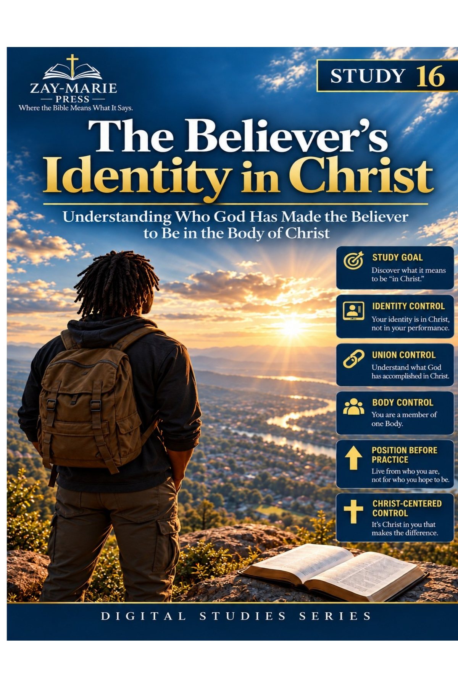
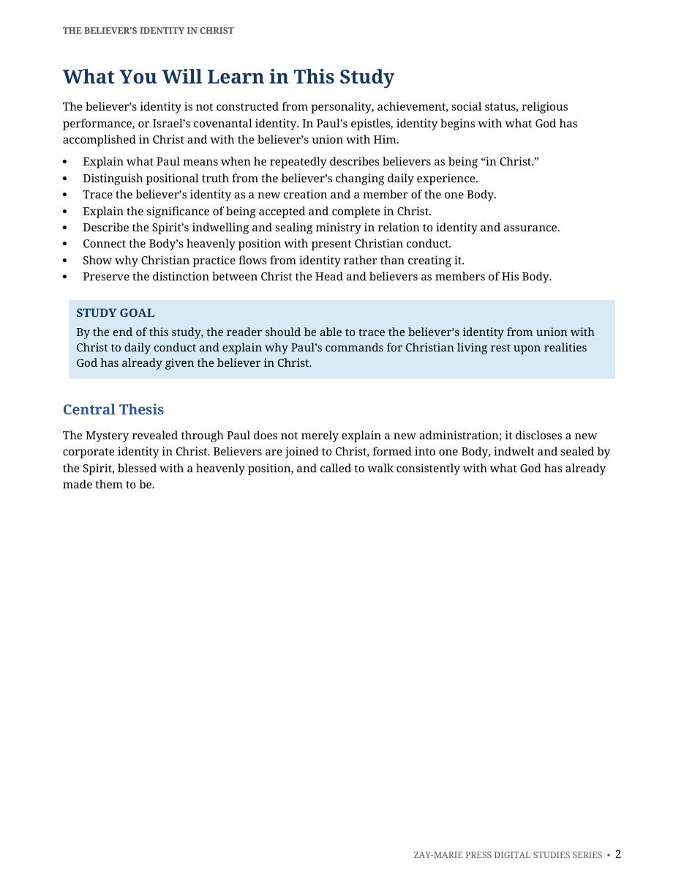
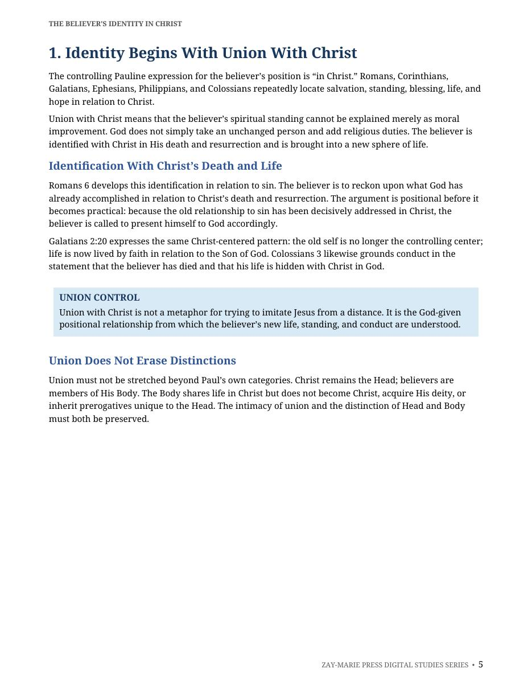
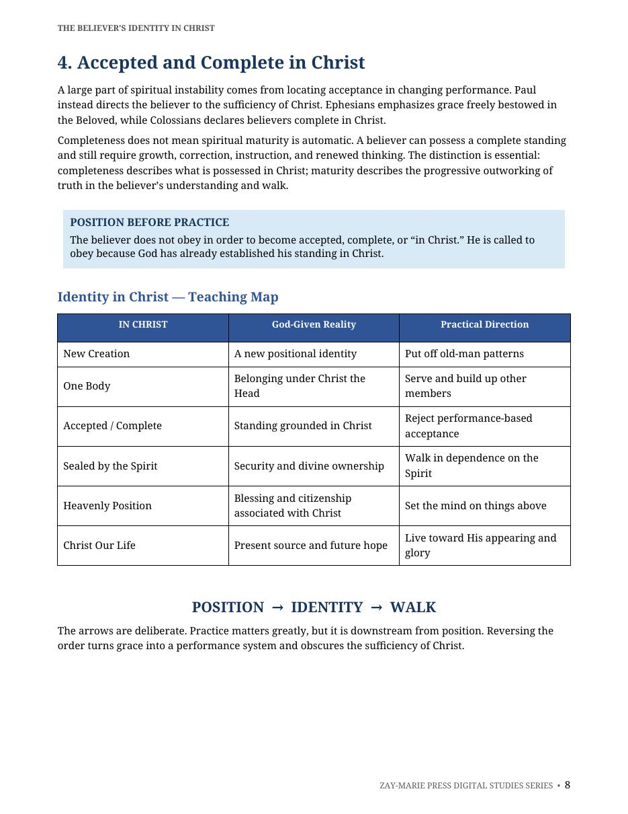
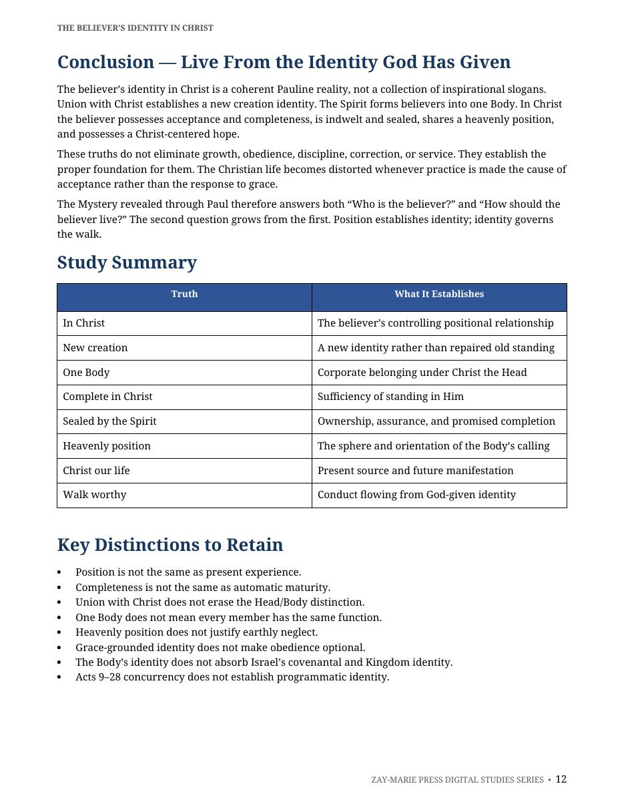

The Believer's Identity in Christ
Union, Standing, Security, and the Heavenly Calling of the Body
A Biblical Examination of New Creation, One-Body Identity, Completeness, Sealing, and the Worthy Walk
The believer’s identity is not constructed through achievement, personality, religious performance, or changing circumstances. In Paul’s epistles, identity begins with what God has accomplished in Christ: union with Him, a new creation standing, membership in one Body, acceptance, completeness, sealing by the Spirit, and a heavenly calling.
This study follows Paul’s order from position to identity to walk. It shows why Christian conduct is the response to grace rather than the means of gaining acceptance, while preserving the distinction between the Body’s Mystery identity and Israel’s covenantal and Kingdom identity.
Who Is the Believer in Christ?
Paul repeatedly locates the believer’s standing “in Christ.” That expression directs attention away from self-construction and toward divine accomplishment. The believer is identified with Christ, made part of one Body under Him as Head, accepted and complete in Him, and sealed by the Spirit.
These realities do not make growth, service, correction, or obedience optional. They establish their proper foundation. The study therefore distinguishes position from daily experience, completeness from maturity, and grace-grounded security from careless living.
Receive the Identity God Has Given
Union With Christ
Establish the believer’s God-given position in Christ’s death, life, and resurrection.
A New Creation
Distinguish the new identity God has established from former patterns and present experience.
One Body Under One Head
Understand belonging, function, unity, and responsibility under Christ the Head.
Accepted and Complete
Separate a complete standing in Christ from the ongoing work of spiritual maturity.
Sealed by the Spirit
Ground assurance in God’s ownership, promise, and present indwelling ministry.
Position, Identity, and Walk
Learn Paul’s order: divine accomplishment establishes identity, and identity governs conduct.
Examine the Passages for Yourself
Romans 6:1-14
Identification with Christ’s death and resurrection.
Romans 8:1-11
Life in Christ and the indwelling Spirit.
1 Corinthians 12:12-27
Formation and function of the one Body.
2 Corinthians 5:14-21
New creation and Christ-centered life.
Ephesians 1:3-14
Blessing, acceptance, redemption, and sealing.
Ephesians 2:1-10
Grace, new life, and heavenly position.
Ephesians 4:1-32
The worthy walk flowing from calling.
Colossians 2:6-15
Completeness and sufficiency in Christ.
Colossians 3:1-17
Hidden life, future glory, and present conduct.
Philippians 3:20-21
Heavenly citizenship and future transformation.
Position Establishes Identity; Identity Governs the Walk
“The believer’s identity is received in Christ, not manufactured through performance.”
God joins believers to Christ, forms them into one Body, gives them a complete standing, seals them by His Spirit, and directs them toward future glory with Him. Those realities establish the proper foundation for faithful conduct.
Preview the Study Before You Purchase
Click any page to enlarge it for reading.
{kind=link}

What You Will Learn
Begin with the study’s central definition of identity in Christ and its governing distinctions.
{kind=link}

Identity Begins With Union
Examine the believer’s positional relationship to Christ and its practical implications.
{kind=link}

Accepted and Complete
See the teaching map that moves from God-given position to identity and a worthy walk.
{kind=link}

Study Summary
Review the study’s core truths and the distinctions that protect Paul’s order of grace.
A Focused Study Built for
Understanding and Teaching
14-Page In-Depth Biblical Study
A focused explanation of the believer’s identity in Christ and the truths that establish it.
Nine Core Teaching Sections
Progress from union with Christ through the Body’s standing, security, and worthy walk.
Identity Teaching Map
Use the position-to-identity-to-walk framework to keep Paul’s order clear.
Scripture-Tracing Exercise
Work through the principal passages in sequence before moving to application.
Study Summary
Review the principal truths that establish the believer’s standing in Christ.
Key Distinctions
Retain the differences between position and experience, completeness and maturity, and grace and performance.
Teaching Outline
Present union, one-Body identity, security, and practical conduct in a clear sequence.
Guided Further Study
Investigate “in Christ,” the Body, position and practice, and assurance directly from Scripture.
The Believer's Identity in Christ
14-page digital PDF · For personal use